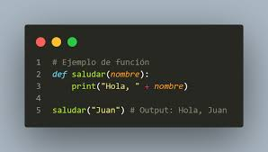
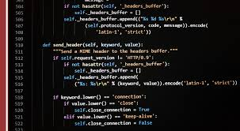
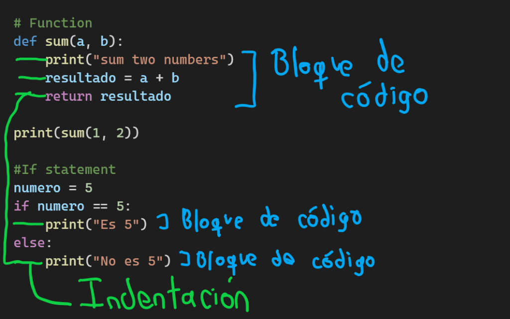

"Es genial trabajar con ordenadores. No discuten, lo recuerdan todo y no se beben tu cerveza". Paul Leary
¿Qué es Python?
Python es un lenguaje de programación de alto nivel que se utiliza para crear software, aplicaciones web, analizar datos, y realizar machine learning:
*Es un lenguaje de propósito general, lo que significa que se puede utilizar para crear una variedad de programas.
*Es fácil de aprender y utilizar, ya que su código es legible y no requiere una sintaxis complicada.
*Es eficiente y se puede ejecutar en muchas plataformas diferentes.
*Su versatilidad y extensas bibliotecas facilitan la realización de tareas complejas.
Cuenta con una comunidad activa que ofrece módulos y bibliotecas externas. }
¿Cómo funciona Python?
Python es un lenguaje de programación interpretado que funciona de la siguiente manera:
1_Interpretado
El código de Python se ejecuta directamente, línea a línea, sin necesidad de traducirlo a código máquina.
2_Dinámico
Python determina los tipos de variables en tiempo de ejecución, por lo que no es necesario declararlas en el código fuente.
3_Alto nivel
Python está diseñado para ser más cercano a los idiomas humanos que otros lenguajes de programación.
4_Multiparadigma
Python admite varios tipos de programación, como la orientada a objetos, la funcional y la imperativa.
5_Multiplataforma
Python se puede ejecutar en los sistemas operativos más populares, como Windows, Linux y macOS.


Algunas características adicionales de Python son:
Utiliza sangría en lugar de llaves.
Utiliza palabras similares al inglés, como "not", "or" y "and" para los operadores lógicos.
